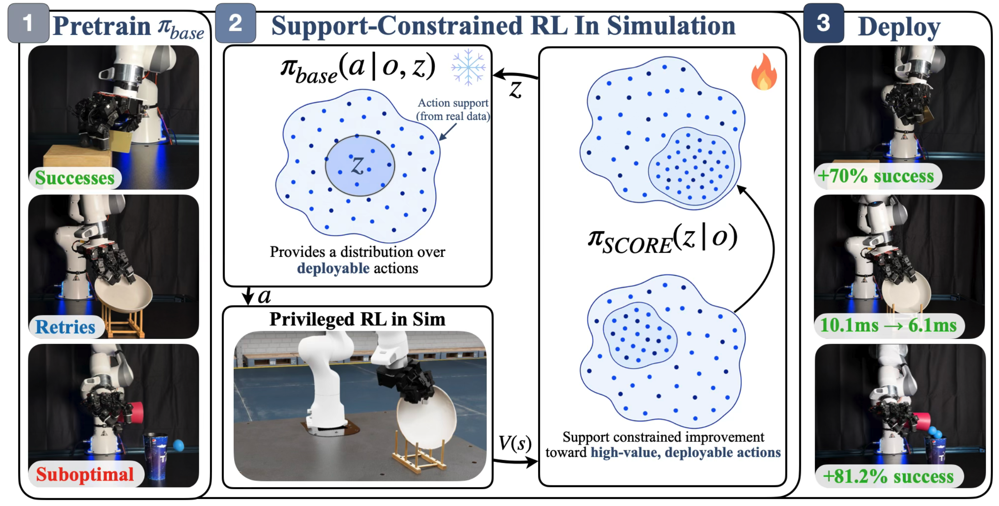
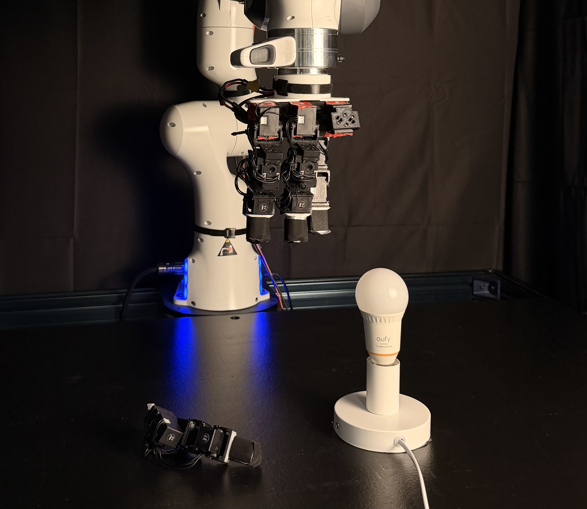
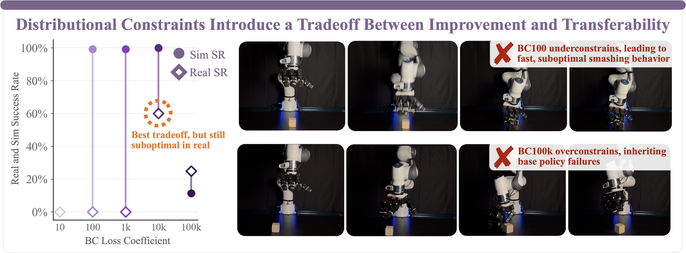
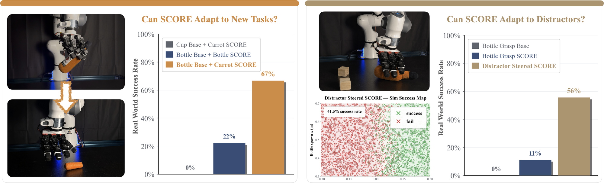

⚠Failure Mode A
Unconstrained RL in Sim
Freely optimizing in simulation can discover reward-hacking, dynamics-specific behaviors that transfer poorly to the real world.
Support-Constrained RL Enables Real-World Policy Improvement without Real-World Experience
Simulation can improve policies — but it can also break them.
Improving real-world manipulation policies directly on hardware is slow and expensive, so we turn to simulation. In this paper, we study the problem of off-domain policy improvement: how can we improve a real-world policy using interaction only in simulation?
But simulation is a double-edged sword. Existing methods sit at two extremes — optimizing freely in sim, or tightly constraining the policy to the demonstration distribution — and each extreme fails in its own way:
Freely optimizing in simulation can discover reward-hacking, dynamics-specific behaviors that transfer poorly to the real world.
BC constraints keep policies close to the base policy — but too little regularization lets the policy reward-hack, while too much preserves the base policy’s slow, imprecise, or failed behaviors.
Constrain simulation optimization to behaviors already represented in the real-world policy. Improve within the support of the behavior prior, rather than matching or ignoring the full distribution.
Policy improvement in simulation should be constrained to the support of the real world prior.
Steer through the support — don’t escape it.
To improve a policy in simulation without leaving what works in the real world, SCORE answers three questions — each handled by one component:
A generative policy trained on real demonstrations defines the support. Only behaviors inside it can reliably transfer.
RL in simulation searches within that support for higher-reward modes, guided by a privileged critic unavailable at deployment.
Directly — no distillation, no finetuning. The actor is trained on deployment-compatible observations, with no distillation from a privileged state policy and no sim-to-real fine-tuning stage.
Together, these pieces form SCORE, a simple and general framework for off-domain policy improvement. Its optimizer is modular: any support-constrained RL algorithm can be swapped in.

Sim RL that transfers.
Across eight real-world multi-fingered manipulation tasks, SCORE substantially improves success rate over the base policy.
Select a task to see base policy versus SCORE rollouts, qualitative analysis, and per-task results. SCORE produces faster, more precise, and more robust behavior while remaining within the support of the real-world behavior prior.
Unconstrained RL discovers strategies that are unsafe or unreliable on hardware.
Unconstrained RL in simulation can achieve high reward in simulation while learning behavior that is erratic or dangerous on physical hardware. SCORE avoids these failure modes by keeping the steering policy within the support of the real-world behavior prior.

Distributional constraints introduce a tradeoff between improvement and transferability.
A natural way to keep simulation policies deployable is to regularize them toward the base policy with a behavior-cloning (BC) loss. But the strength of that constraint is a delicate knob: too little and the policy drifts into dangerous, non-transferable behavior; too much and it inherits the base policy’s failures. No single setting recovers SCORE’s performance.

The same tension shows up on real tasks: distributionally-constrained policies can still settle on behaviors that are unsafe or unreliable once deployed.
SCORE inherits the limits of its prior — and that points the way forward.
What SCORE can reach is shaped by the coverage of its real-world prior. The experiments below make this concrete — one shows how far steering can push a prior toward a new goal, the other shows where it stalls when the prior is too narrow.
We reuse a frozen bottle-grasp base policy and steer it in simulation by replacing the bottle with a carrot — an object the base policy was never trained on. A carrot is much thinner than a bottle and demands a precise pinch, a behavior that appears only with very low probability under the bottle-grasp prior. Even so, steering surfaces this rare in-support behavior: compared against the same policy steered to grasp a bottle, the carrot-steered policy improves substantially — showing that behaviors already in the prior’s support can be repurposed toward new goals.
The same bottle-grasp policy was trained on real data without distractors. Steering it in simulation to handle an added distractor recovers a lot of performance — 56% real-world success, up from 0% for the base policy and 11% for SCORE without distractors. But the simulation success map below reveals the catch: the policy succeeds almost only when the bottle is on one side of the workspace (≈41.5% overall), defaulting to the right. The base policy’s coverage and representation are too thin to absorb distractors across the whole workspace, so steering inherits a spatial bias rather than true robustness.

Both experiments point to the same lever: the behavior prior. Stronger representations, broader coverage, and robustness to conditions like distractors would directly expand what steering can achieve.
Improving the prior is the lever these experiments expose. Beyond it, what the simulator can reliably capture and how SCORE scales remain open directions.
SCORE is limited to behaviors the simulator can model faithfully. Rigid-body contact and randomized dynamics transfer well, but phenomena like deformables, cloth, and fluids remain hard to simulate accurately — restricting the tasks SCORE can currently improve.
Because the simulator cannot render diverse, photorealistic environments at scale, we operate on point clouds and proprioception rather than RGB images. This sidesteps much of the visual sim-to-real gap, but point clouds strip away much of the semantic meaning that RGB carries.
SCORE currently trains a separate steering policy per task. Scaling to a single policy that can steer a broad, multi-task prior across diverse task distributions is an open direction for future work.